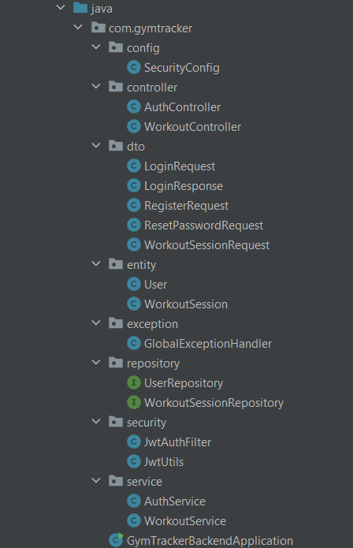
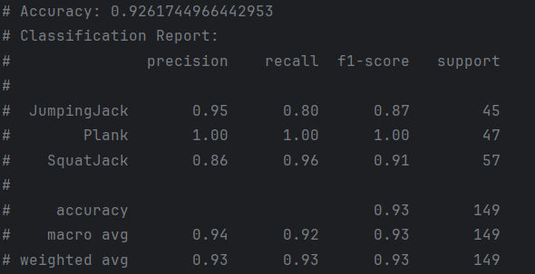
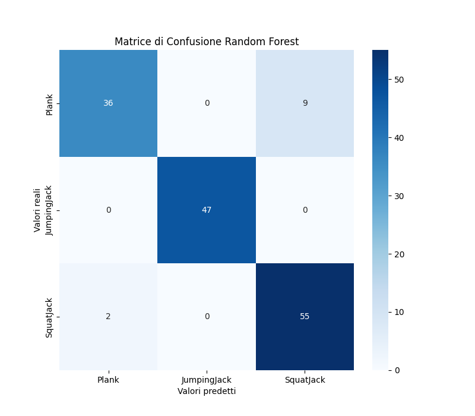
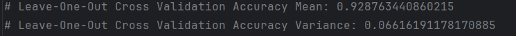

Sviluppo
Il progetto GymTrackerAI è stato sviluppato integrando diverse tecnologie e linguaggi di programmazione per garantire un sistema robusto, scalabile e interattivo. Di seguito sono elencati i principali strumenti utilizzati:
- ST BlueST SDK: SDK ufficiale di STMicroelectronics utilizzato per l’interazione Bluetooth con il dispositivo SensorTile.
- Kotlin: linguaggio scelto per lo sviluppo dell'app Android, compatibile con Jetpack Compose e BLE.
- Python: usato per addestrare e validare il modello di Machine Learning.
- scikit-learn: libreria Python per l'implementazione del classificatore Random Forest.
- pandas e NumPy: per l’elaborazione e l’analisi dei dati sensoriali.
- Java: utilizzato per realizzare il backend del sistema.
- Spring Boot: framework Java per la creazione di API RESTful.
- MySQL Workbench: interfaccia per la gestione del database relazionale MySQL, usato per archiviare dati utente e allenamenti.
- Docker: impiegato per containerizzare i servizi backend e ML per una distribuzione efficiente.
Front-end
L’applicazione GymTrackerAI è stata sviluppata in Kotlin utilizzando Jetpack Compose per la realizzazione della UI e lo ST BlueST SDK per la gestione della comunicazione Bluetooth Low Energy con il dispositivo SensorTile.box PRO.
Il flusso utente è strutturato in più sezioni: l’utente può registrarsi, effettuare il login e recuperare la password tramite API REST, con autenticazione gestita via token JWT. Una volta autenticato, può accedere alla sezione allenamento e avviare la scansione e connessione BLE alla SensorTile.box PRO.
Durante l’allenamento, l’app riceve in tempo reale i dati dell’accelerometro dal sensore, li aggrega e li invia al backend, che si occupa di inoltrarli al servizio ML per la classificazione. Il tipo di esercizio riconosciuto viene mostrato dinamicamente all’utente, insieme al tempo e al conteggio delle ripetizioni.
Al termine della sessione, l’utente può visualizzare un resoconto dettagliato dell’allenamento, che viene automaticamente salvato nel database remoto e aggregato con lo storico.
La sezione storico permette di consultare i workout passati (data, tipo di esercizio, durata, ripetizioni), sincronizzati con il backend. Il frontend si interfaccia in modo completo anche con il servizio esterno di ML e garantisce fluidità e continuità nella gestione del sensore durante l'intero flusso utente.
Back-end
Il backend è stato sviluppato utilizzando il framework Spring Boot in modalità monolitica, senza microservizi separati. Tutti i controller e i servizi sono contenuti all’interno dello stesso progetto. Il backend è containerizzato con Docker ed è progettato per integrarsi con il frontend Android e con il modello di Machine Learning.
Le API RESTful gestiscono l’autenticazione, la gestione degli utenti e la registrazione/storico delle sessioni di allenamento.
API di Autenticazione e Utente
POST /auth/register
Registra un nuovo utente nel sistema.POST /auth/login
Esegue il login restituendo un JWT token per l’autenticazione.POST /auth/reset-password
Aggiorna la password dell’utente tramite email e nuova password.
Tutte le richieste successive richiedono il token nel formato: Authorization: Bearer <token>
API Sessioni di Allenamento
POST /workout/save
Salva o aggiorna una sessione di allenamento per l’utente autenticato. Se una sessione per lo stesso esercizio e data esiste, somma tempo e ripetizioni.
GET /workout/history
Restituisce lo storico aggregato delle sessioni dell’utente, ordinate per data decrescente. Ogni giorno contiene al massimo una riga per ogni esercizio.DELETE /workout/deleteByDate?date=YYYY-MM-DD
Elimina tutte le sessioni dell’utente per una determinata data.

Training
Il dataset di GymTrackerAI è stato ottenuto raggruppando i dati dell’accelerometro in finestre temporali di 60 campioni, corrispondenti a circa 2 secondi di movimento a 30 Hz. Questo approccio permette di estrarre informazioni significative per la classificazione degli esercizi. I dati sono etichettati per le classi Plank, JumpingJack e SquatJack, e salvati nel file dataset_index.csv, con un totale di 2.590 istanze.
Per ogni finestra, sono state estratte 12 caratteristiche statistiche su ciascun asse X, Y e Z:
L’intero processo di estrazione è stato realizzato nello script preprocessing.py, che gestisce la lettura, segmentazione e normalizzazione dei dati.
Il modello è stato sviluppato usando Random Forest (implementato in random_forest.py), con 500 alberi e una profondità massima di 10. È stato addestrato con uno split 80/20 e valutato anche tramite Leave-One-Out Cross Validation (LOOCV).
Le metriche di valutazione analizzate includono:
Il modello ha ottenuto prestazioni elevate:
Le classi Plank e SquatJack sono state riconosciute con alta precisione e recall, mentre JumpingJack ha presentato alcune confusioni, soprattutto con SquatJack. Questo è visibile anche nella matrice di confusione generata.
Al termine della fase di training, il modello è stato esportato in formato .onnx tramite la libreria skl2onnx, salvato come random_forest.onnx e integrato nel sistema GymTrackerAI per l’inferenza real-time.


